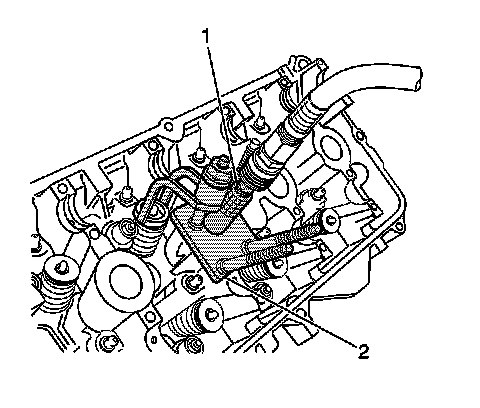

Valve Stem Oil Seal and Valve Spring Replacement - Left Side
Valve Stem Oil Seal and Valve Spring Replacement - Left Side
Tools Required
* J 38820 Valve Stem Seal Installer
* J 39313 Spark Plug Port Adapter
* J 44211 On-Vehicle Valve Spring Compressor
* EN 46326 Flywheel Holder
Removal Procedure
1. Remove the left camshafts. Refer to Camshaft Replacement - Left Side (Camshaft Replacement - Left Side) .
2. Remove the starter. Refer to Starter Motor Replacement (LY7 - Gas, 6 Cylinder, 3.6L, SFI, V6) (Service and Repair)Starter Motor Replacement (LH2 - Gas, 8 Cylinder, 4.6L, SFI, V8, DOHC, HO) (Service and Repair) .

3. Install the EN 46326 (1).
Notice: Clean the spark plug recess area before removing the spark plug. Failure to do so could result in engine damage because of dirt or foreign material entering the cylinder head, or by the contamination of the cylinder head threads. The contaminated threads may prevent the proper seating of the new plug. Use a thread chaser to clean the threads of any contamination.
4. Remove the spark plug from the cylinder being worked on.

5. Install the base plate of the J 44211 (2) over the spark plug hole of the cylinder to be serviced.
6. Install the J 39313 (1) in the spark plug hole.
7. Apply constant air pressure to the J 39313 (1) in order to keep the valve closed.
8. Install the arm and swivel nut of the J 44211 (2) over the stud corresponding to the valve to be serviced.
Caution: Refer to Compressed Valve Spring Caution (Technician Safety Information) .
9. Tighten the swivel nut of the J 44211 (2) down only enough to allow access for removal of the valve locks.
10. Use a magnet to remove the valve locks.
11. Loosen the swivel nut of the J 44211 (2) and swing the arm away from the valve spring retainer.
12. Remove the valve spring retainer and valve spring.

Important: The valve stem seal should not be removed unless replacement is required.
13. Use the J 38820 in order to grip the seal. Remove the seal by exerting a twisting, pulling motion. Discard the old valve stem seal.
14. Inspect and measure the valve spring. Refer to Valve Spring Inspection and Measurement (Overhaul) .
Installation Procedure
1. Lubricate the valve stem and the inner diameter of the new seal with clean engine oil.
Important: Install a seal protector over the valve stem prior to installing the valve stem seal.
2. Using a twisting pushing motion install the NEW valve stem seal using the J 38820 .
3. Install the valve spring retainer and valve spring.
Caution: Refer to Compressed Valve Spring Caution (Technician Safety Information) .
4. Swing the arm over the valve spring retainer and tighten the swivel nut of the J 44211 (2) down only enough to allow access for installation of the valve locks.
5. Using a magnet, position the valve locks to the valve stem retainer groove. Grease can be used to hold the locks in place.
6. Remove the swivel nut and arm of the J 44211 (2).
7. Install the arm and swivel nut of the J 44211 (2) over the stud of any other valves being serviced and repeat removal steps 12-17 and installation steps 1-7.
8. Relieve the air pressure to the cylinder being serviced.
9. Remove the J 39313 (1) from the spark plug hole.
10. Remove the base plate of the J 44211 (2).
11. Install the spark plug. Refer to Spark Plug Replacement (Service and Repair) .
12. Repeat removal steps 7-14 and installation steps 1-11 on any other cylinders being serviced.
13. Install the left camshafts. Refer to Camshaft Replacement - Left Side (Camshaft Replacement - Left Side) .
14. Remove the EN 46326 (1).
15. Install the starter. Refer to Starter Motor Replacement (LY7 - Gas, 6 Cylinder, 3.6L, SFI, V6) (Service and Repair)Starter Motor Replacement (LH2 - Gas, 8 Cylinder, 4.6L, SFI, V8, DOHC, HO) (Service and Repair) .